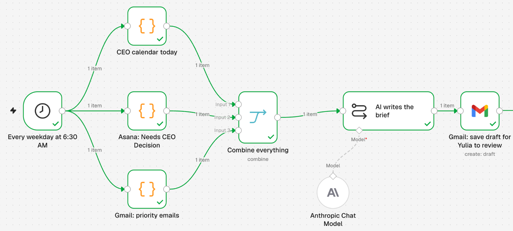

Portfolio project · n8n automation
Every weekday at 6:30, an n8n workflow gathers the CEO's calendar, the decisions waiting on him and his priority emails, and AI drafts them into one short brief. It lands in my drafts, not his inbox. I check it, correct it and send it by 7:30.
See the briefOne brief, three stages
This is a real run of the workflow on sample data. Click through to see what n8n gathers, what the AI drafts, and what the CEO actually receives after my review.
Three sources, pulled at 6:30 on Wednesday, December 2.
8:30 Weekly leadership sync Zoom, 45 min
10:00 Investor call, Northbridge Capital Q4 deck to be shared
12:30 Lunch with Head of Product Café Vico, Parkland
3:00 Barcelona QBR planning Conference room B
6:15 Car to FLL DL 2417 departs 8:05 PM to JFK
Weather: 82°F, rain likely after 6 pm
Approve Q4 investor deck due 9:30 AM
Sign Barcelona venue contract $18,400, due Friday
Approve pool heater repair $3,200, over the $2,500 limit
Driver timesheet 52 hours vs 40 scheduled
Northbridge Capital Asks to move the call to 10:30. Not confirmed.
DocuSign NDA with ad network partner awaiting signature
CFO Weekly cash report, no action needed
Written by the AI step in about four seconds and saved as a Gmail draft. Unedited.
Busy day with back-to-back meetings until evening, then a flight to JFK with rain expected later.
Yulia
After my review. Highlighted lines are my changes; struck lines were removed.
Busy day with back-to-back meetings until evening, then a flight to JFK with rain expected later.
Yulia
Behind the scenes
It runs on its own every weekday morning; my only daily job is keeping the calendar and the board current, because the brief is only as good as what it reads.

The human step
The AI did well: it noticed that the deck must be approved before the investor call, and that rain affects the airport run. It still needed a person who knows the principal.
A document waiting for his signature is a decision, not information. Filed under the wrong heading, it would sit for another day.
A driver's overtime is mine to check against the schedule. It only reaches the CEO if something is actually wrong.
He should not have to wonder when his call is. I take the follow-up, and I adjusted the car for the weather instead of just mentioning it.
I automate the gathering, not the judgment.
For a founder's office
The same pattern (gather, let AI draft, I review) works anywhere a founder's time goes into reading before deciding. Click any card to see how I would map it in n8n.
Choosing the right tool
I have built a live demo in each. They overlap, so I choose by what the job needs.
Design choices
A draft, never an automatic send. Anything that reaches the principal passes through me first. The workflow saves time on gathering; it does not decide what he reads.
Written house rules for the AI. The AI step follows instructions I wrote: decisions first, point out connections, mark anything unconfirmed, keep it short, no filler.
Sample data for this demo. The calendar, board and emails here are invented so no real person's information appears. In practice the three source steps connect to Google Calendar, Asana and Gmail.
Approved tools only. Before connecting AI to a principal's email or calendar, I would confirm with the CEO and the IT or security team which tools are approved, and where the data is stored.